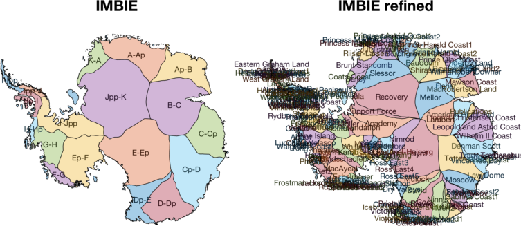
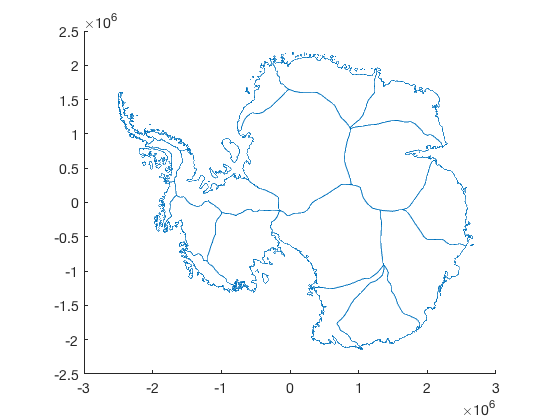
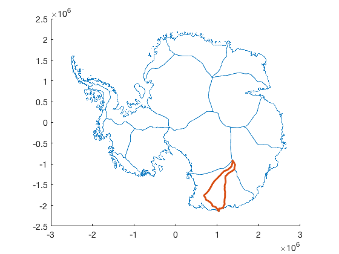

basin_data documentation
basin_data loads IMBIE or IMBIE Refined basins in the MEaSURES Antarctic Boundaries for IPY 2007-2009 from Satellite Radar dataset Version 2.
The Antarctic Boundaries dataset is described on the NSIDC site here. An overview of the tools in this AMT plugin can be found here.
(For Zwally's basins instead use basinsps.)

Contents
Syntax
[lat,lon] = basin_data(basinDataset) [...] = basin_data(basinDataset,basinName) [x,y] = basin_data(...,'xy')
Description
[lat,lon] = basin_data(basinDataset) returns geocoordinates of all basins in the basinDataset, which can be 'imbie' or 'imbie refined'.
[...] = basin_data(basinDataset,basinName) specifies a single basin name. To see a list of basins available in each dataset type plot_basins('demo').
[x,y] = basin_data(...,'xy') returns data in x,y polar stereographic meters (ps71).
Example 1
Load and plot all IMBIE basins:
[lat,lon] = basin_data('imbie');
plotps(lat,lon)
 Example 2
Load the Cook Ice Shelf basin data from the IMBIE refined dataset and overlay it on the previous map:
[x_cook,y_cook] = basin_data('imbie refined','cook','xy'); hold on plot(x_cook,y_cook,'linewidth',3)
Citing this dataset
If you use this dataset, please cite the following:
- The dataset: Mouginot, J., B. Scheuchl, and E. Rignot. 2017. MEaSUREs Antarctic Boundaries for IPY 2007-2009 from Satellite Radar, Version 2. [Indicate subset used]. Boulder, Colorado USA. NASA National Snow and Ice Data Center Distributed Active Archive Center. http://dx.doi.org/10.5067/AXE4121732AD.
- Literature citation: Rignot, E., S. S. Jacobs, J. Mouginot, and B. Scheuchl. 2013. Ice-shelf melting around Antarctica, Science. 341. 266-270. http://dx.doi.org/10.1126/science.1235798.
- Antarctic Mapping Tools: Greene, C. A., Gwyther, D. E., & Blankenship, D. D. Antarctic Mapping Tools for Matlab. Computers & Geosciences. 104 (2017) pp.151-157. doi:10.1016/j.cageo.2016.08.003.
Author Info
This function and supporting documentation were written by Chad A. Greene of the University of Texas Institute for Geophysics (UTIG), May 2018.